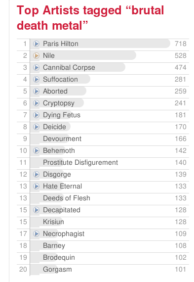

The slides and the audio for my JavaOne talk about Search Inside the Music are online at the JavaOne online site (you may have to register as a Sun Developer to get to the site). The SITM talks is on the desktop track. The slides are here (pdf), and you can watch synchronized slides with the audio here.
I've
noticed that they've compressed the audio, removing all of the silence.
It makes the pacing a bit unnatural, but still it is nice that they put
this all online (and with a transcript too!).
Update: yep, the slides are somewhat broken... the javaone site admins are 'working on it'.
If you are in London tomorrow, head on over to Queen Mary, University of London. Robert Kaye, founder and mayhem master at MusicBrainz is giving a seminar at the Center for Digital Music
at Queen Mary. Friday 4pm, June 1, Electronic Engineering Department,
Mile End Road, E1 4NS. Rumor is that Robert will have his hair shaved to
form a map of the entire London Underground.
Maybe after that Robert can head on over to Last.fm to convince the
guys there to finish the hookup with MusicBrainz with all that nifty
new CBS money.
Update:(via Steve Welburn) Here's a nifty abstract for the talk:
GraceNote has built a walled garden of music metadata by stealing data
from the commons. Music metadata holds the key to efficient
communication about music on the internet; locking up this data in a
walled garden hampers the further evolution of the music industry.
Robert Kaye will talk about MusicBrainz, and open source/data project
to build a music encyclopedia that actively works to create a music
metadata commons on the Internet. The seminar will cover the future of
MusicBrainz and MetaBrainz Foundation and how MusicBrainz aims to
establish a Lingua Franca for unambiguous communication about music.
Find out how MusicBrainz and MusicIP create a level playing field that
allows everyone to participate in efficient communication and
classification of music.
The recent acquisition of last.fm by CBS has me a bit worried.
Last.fm is a totally cool company that really gets the whole social web
thing (in fact they are one of the defining web 2.0 sites out there).
They harness the wisdom of the crowds to hook people up with
content. They have amassed a set of taste data that they use to
give music listeners high quality recommendations. They use social tags
to give new ways for users to explore, browse and discover music.
They've provided web services to let others access and use this data in allsorts of novelways.
Even their name "last.fm" indicates that they are the new way of doing
things, they are the last radio station you'll ever need.
So
when I heard that CBS was buying last.fm I had some very mixed
feelings. Certainly, I'm very happy for the folks at
Last.fm. They've done something special and deserve to be rewarded
(and I hope all the money isn't going to the investors). However,
I'm more than a bit worried that CBS, with its old-media ways may screw
things up for last.fm. We've seen it with web 2.0 acquisitions
before, even with companies like Yahoo! that should understand these
things. Remember when Yahoo! purchased Flickr and they almost destroyed the community
by pissing off their users? Social web sites like Flickr and
last.fm are all about the community, and it doesn't take much to piss
off a community. Luckily CBS says that they'll leave Martin, Felix
and RJ in charge at last.fm - nevertheless I worry that the old media
guys will do something stupid with last.fm. Some advice to CBS.
Please don't:
Surround last.fm with ads and promos such that it is hard to find the site. (like you see at Yahoo! Music)
Disable or cripple their webservices
Eliminate ties to other sites such as Amazon and Youtube that may be competing with CBS
Require
legal approvals anytime they want to push a new feature (I've
always been amazed at how fast RJ can push out new web services
features).
Piss off your users by doing stupid things like changing their logins or spamming them with ads
Please
do leave Martin, Felix and RJ in charge and let them do what they
do best, which is to make a really cool music 2.0 community. I've heard
from folks inside last.fm say that they have been ensured that last.fm
will continue on the path it is on. RJ posts in the brand new Last.fm blog that:
The Last.fm team stays put in London.
We
will continue to execute our world domination plans – our focus is
still music and the surrounding ecosystem. The founders (myself
included) are still at the helm.
We have more resources at our disposal now, and more clout when it comes to negotiating licensing deals etc.
OH NOES UR SELLIN MY SCROBBLES!!1!! — Don’t panic. The openness of our platform and our approach to privacy won’t change.
Bruce Johnson, tech lead of the Google Web Toolkit posts that the GWT 1.4 release candidate is now available for download. Highlights in this release (from my point of view) are:
Size
and speed improvements - the GWT are doing everything they can to
reduce the startup time, including using ImageBundles to reduce the
number of http requests needed to fetch static images. There goal
is 300ms maximum for an application load time.
Some new widgets - RichTextArea, SuggestBox, PushButton, DisclosurePanel and Splitters.
Support for mouse wheel events
Lots of bug fixes (although I've yet to encounter a GWT bug).
Searching for music tagged with 'Brutal Death Metal' on the music 2.0 site MyStrands yields these results along with some interesting and (perhaps) mistargeted Google ads.
I'm a sucker for visualizations of music data. Rocket Surgeon has a post highlighting more than a dozen ways to visualize your last.fm data. Neat stuff.
Another Amazon recommendation ... this one associates Snakes on a Plane and World Trade Center. The only thing these movies have in common is the release date.
I'm reading and enjoying the book, Everything is Miscellaneous but I thought I'd check out the movie too. This is a Google talk by author David Weinberger.
If you like the Chronicles of Narnia you may want to trim those nose hairs (or ear hairs).
Amazon apparently has discovered a statistical correlation between
purchasers of C.S Lewis's classic and purchasers of the Panasonic Nose
and Ear Hair Groomer. (I'm guessing that it was Mr Tumnus who skewed
the curve).
Here's a screenshot of a recommendation made by Amazon's
wonderful book recommender. This shows the classic collaborative
filtering (CF) algorithm at work: "Customers who bought the Da Vinci Code
also bought these items ... " It is a great way to get recommendations,
but sometimes it can go awry. Here we see three recommendations.
The first two recommendations seem quite reasonable: Digital Fortress is a book by the same author as the Da Vinci Code, Holy Blood Holy Grail isa book about the same subject matter as the Da Vinci code. The 3rd recommendation - the 5th Harry Potter book,
seems rather strange. It is a book written for a completely
different demographic - middle schoolers and young adults, it is a
fantasy about school kids and has very little similarity to an art
history thriller such as the Da Vinci Code. So what gives? Is the
Amazon recommender broken? Nah ... it is doing it's job just
fine. The Da Vinci Code and Harry Potter and the Half-Blood Prince
do have one thing in common. They are both very popular books and
they happened to be very popular at the same time. When mom would
go to Amazon to order a copy of the Da Vinci Code, she would also pick
up a copy of Harry Potter for the kids. This was repeated
thousands of time, and the Amazon recommender duly noted the
correlation. From a shopper's perspective, it is probably a
pretty good recommendation. Amazon knows that if you buy this
book, based on its data, there's a 5% chance that you'll pick up the
latest Harry Potter as well. However, from a book reader's
perspective, this is probably a poor recommendation, the books have
little in common.
A recommender for shopping is not the
same as a recommender for discovery. If you are shopping for
books, Amazon is the place to go, but if you are looking for a good book
to read, you may want to use a recommender like LibraryThing that recommends books based on who has read a book as opposed to who has purchased a book.
At last.fm, there are hundreds of band
that have been tagged with 'brutal death metal'. They tend to have
rather grim names like Cryptopsy, Aborted, Dying Fetus,
Decapitated. However, there is one artist that has been tagged
with 'brutal death metal' more than any other artist. This artist is the
king of the brutal death metal hill, being tagged with 'brutal death
metal' a hundred times more than the #2 Brutal Death Metal
Band. This artist is none other than Paris
Hilton. Here are the tags for Brutal Death Metal:

Paris
Hilton is keeping strange company, perhaps she's trying to toughen up
her image before she heads to prison. (And Barney the Dinosaur is
not too shabby at #18 in the list).
We all know that no matter
what we may think of Paris Hilton, she is not a Brutal Death Metal
artist. What we are seeing here is the result of social tagging
vandalism. I can imagine some 14 year old kid getting a laugh
tagging Paris Hilton with Brutal Death Metal, knowing that sooner or
later someone will be listening to last.fm's Paris Hilton radio and be surprised and shocked to hear Cryptopsy. Of course, this goes the other way too. If you listen to Brutal Death Metal tag radio, you are very likely to hear Paris Hilton (ouch!). (Go ahead, give it a try)
Social tagging vandalism is the Web 2.0 equivalent of writing
graffiti on the bathroom wall - its a way for the meek to lash out while
hiding behind the veil of anonymity. But social tagging vandalism
does have a real impact. Tagging vandalism, if unchecked, can
devalue the entire set of tags. Of course you can expect noise in
your tags, there will always be the off-topic tags such as lazy eye,
but when the errant tags dominate (such as we see here with Paris
Hilton) all of the other tags applied to Paris Hilton mean
less. Sites like last.fm that let you do all sorts of interesting
things with tags (such as listen to tag radio), have to protect their
data otherwise the value of the tags will be lost. Just like
we need to occasionally paint the bathroom walls, tagging sites need to
occasionally clean up their tags.
This little announcement has appeared on the Webjay site:
Announcement:Webjay will be
closing at the end of June! Click here to learn how you can back up
your playlists and keep your player running smoothly.
This
isn't too surprising. Lucas Gonze, the man behind Webjay, has
been busy on other things, and development on Webjay seemed to have
stopped a while ago. I hope they make their data available for the
research community.
If you are looking for an alternative
playlist sharing site, check out the review that DJ Alchemi wrote a few
years back. He compares 7 playlist services (although he neglects to mention my favorite: MusicMobs). (Via Rocketsurgeonblog)
Last night, Pandora unveiled their new 'Pandora on The Go'.
For $3 a month (in addition to your data plan) you can bring listen to
your Pandora stations on your Sprint phone. Pandora is putting the
full Pandora function on the phone. You can create new stations,
rate tracks, learn more why a song was played. No word yet on the
sound quality or bit rate.
Pandora
also announced that Pandora will now run on the Sonos Digital Music
System. For $36 per year, you can get Pandora on your Sonos.
(Isn't it already free on your Squeezebox? )
This blog copyright 2010 by plamere
About this weblog
(This is an archive of most of Paul Lamere's weblog from blogs.sun.com/plamere/
This is not the original. Some links do not work.
An entry index is available.)
I am a researcher in Sun Labs where I explore new ways to organize, search for, and discover music. Read more on the Search Inside the Music project page .